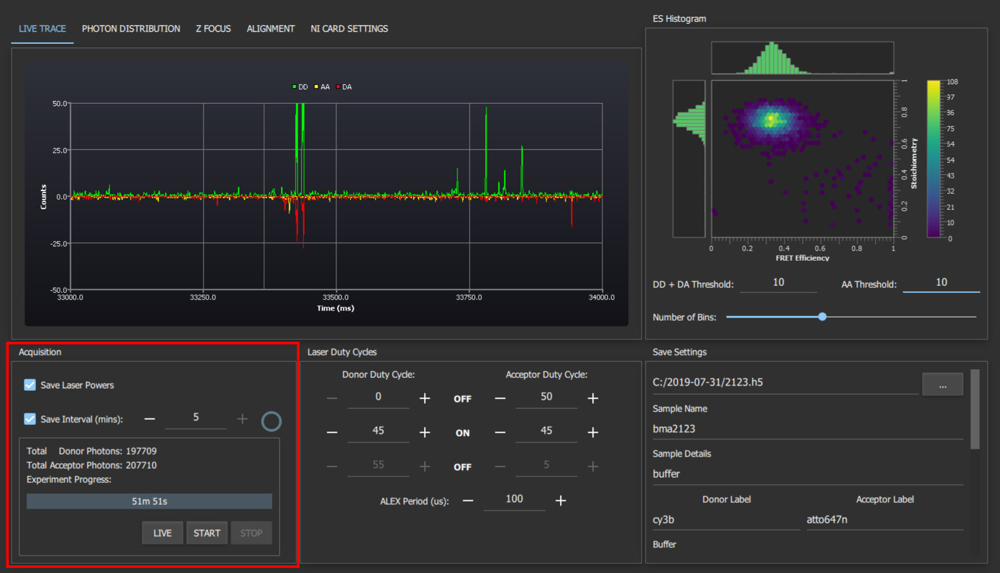
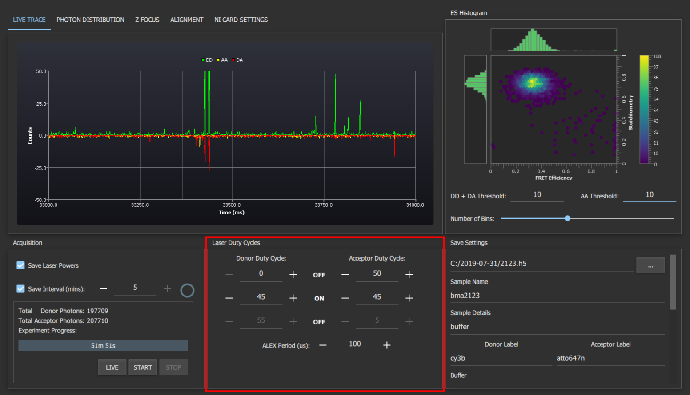
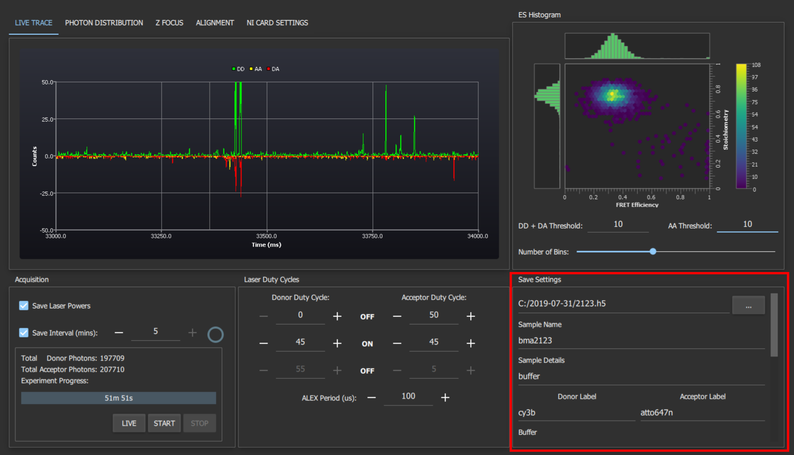
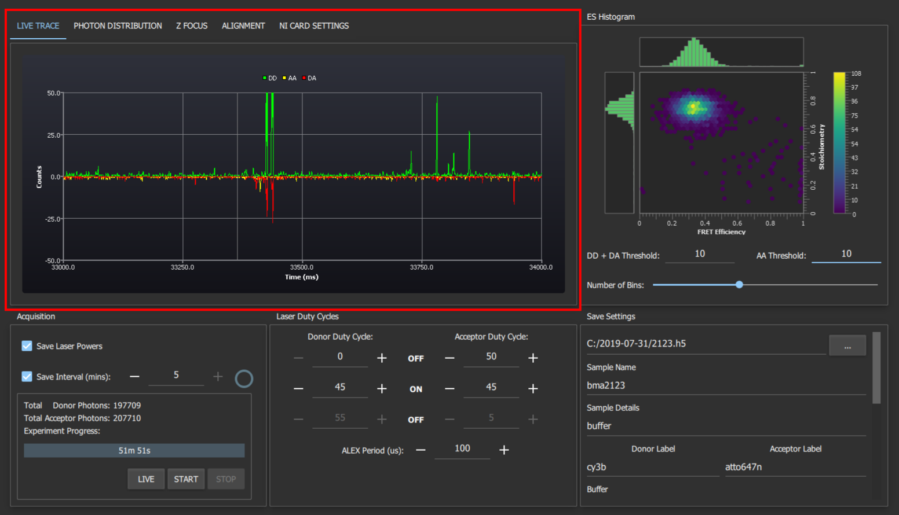
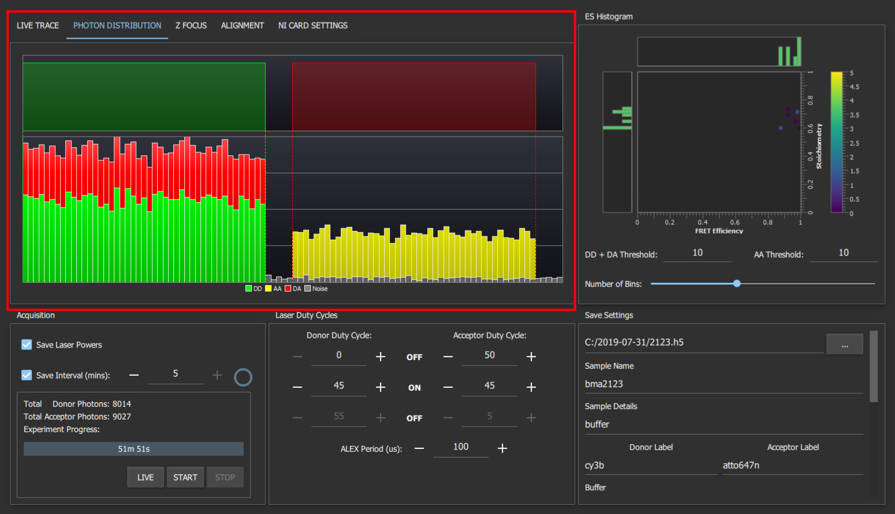
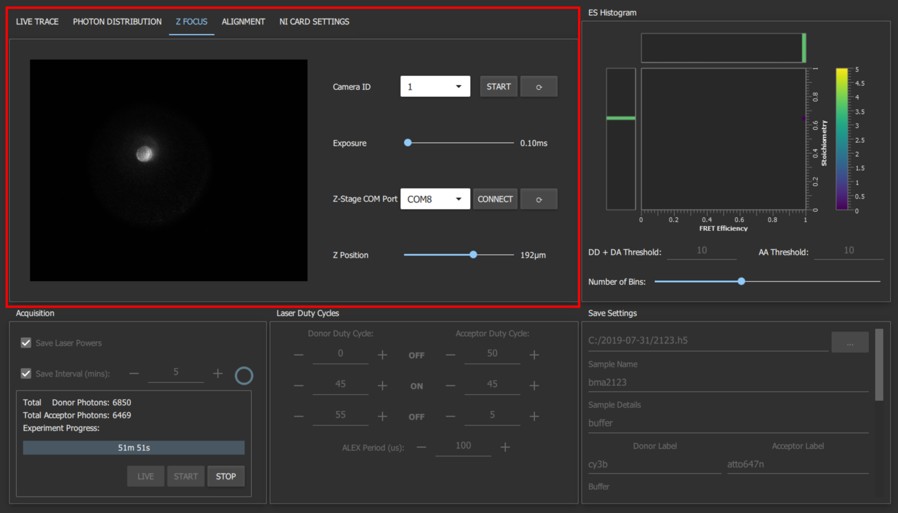
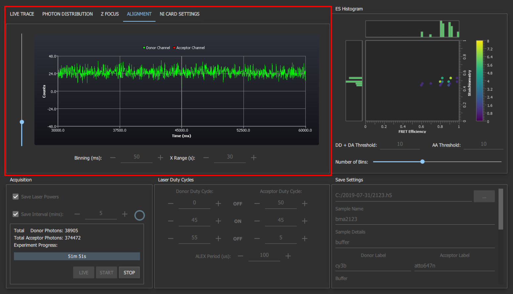
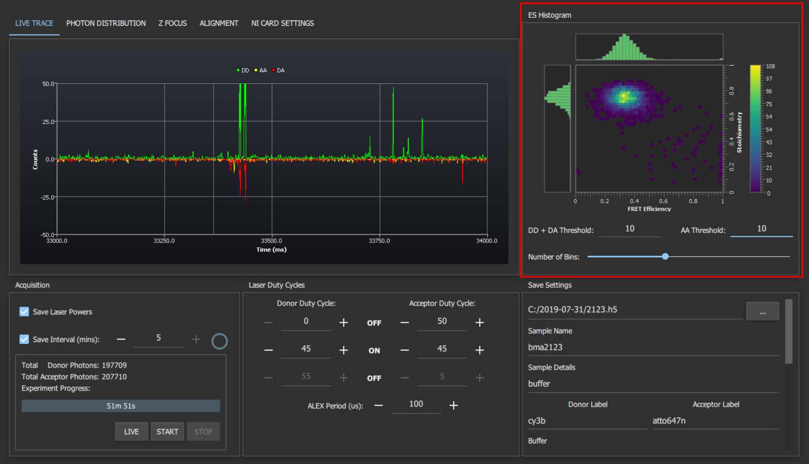
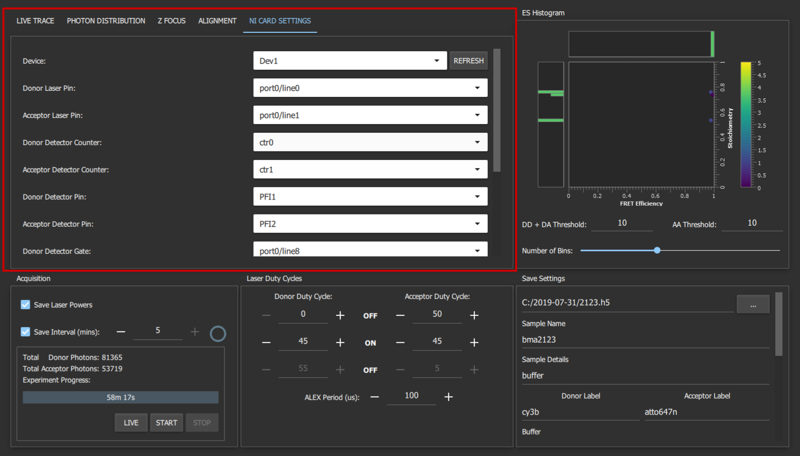

To operate the smfBox, software is required to operate the nanostage for focussing the confocal spot into the
sample, controlling the laser alternation, and saving the incoming data from the detectors. Additionally, a simple
tool which displays a line plot of incoming light intensity onto the detectors is useful for general alignment
purposes. To this end we provide both LabVIEW executables and an open source C++ implementation.
Installation
Pre-compiled executables are available from our github. To install, simply download the zip, extract it to a location of your choosing and run the smfBoxAcquisition.exe.
The executables require the following to be installed to operate correctly:
A copy of Visual Studio 2017 or later and an installation of Qt 5.12 is required to compile from source (these are available from here and here respectively. The free community editions are sufficient). The code additionally depends on the NIDAQ C SDK which comes with an installation of DAQmx (link), the ThorCam C SDK which comes with an installation of the ThorCam software and a copy of the HDF5 C++ library. The HDF5 library can be compiled from source (available here. Version 1.10.4 was used to develop the software but later versions should work) or a compatible compiled version can be downloaded from our GitHub.
Once all the dependencies have been installed, download the code from our GitHub. Ensure that the dependencies are found in the parent folder of the source directory as shown in the diagram below. The project can now be opened in Qt Creator (installed by default with Qt). Alternatively, the project can be opened in Visual Studio by installing the Qt plugin and selecting import .pro file project from the Qt VS dropdown. The code can then be compiled by selecting the build (or build and run) button in your chosen IDE. The executable should appear in %SRC_DIR%/build/Debug or %SRC_DIR%/build/Release depending on your compilation settings.
Note: Unless you plan on making changes and/or debugging the application you should compile the code in release mode. This applies several optimisations that will help prevent issues like GUI lag and buffer overflows. Additionally, if you plan on deploying the compiled executable on a computer that does not have Visual Studio 2017 installed you MUST compile in release mode (Debug executables rely on system libraries that are only present if you have a copy of Visual Studio installed).
To deploy the project, a powershell script is provided. Simply open a powershell window, navigate to the source folder and run ./deploy.ps1. This will create a deploy folder in %SRC_DIR%/build that contains all the files required to run the program on the desired computer.
Note: This will fail if you have yet to build the program in release mode
Note: This will probably fail if you are using a Qt version other than 5.12.0 or you didn't install Qt to its default location. This can be fixed by editing the first line in deploy.ps1 from C:\Qt\5.12.0\... to C:\<Your_Qt_Install_Dir>\<Your_Qt_Version>\...
Acquisition Settings

The Acquisition Settings Section
The acquisition settings section contains settings for and status of the current experiment. The experiment length setting controls the time the experiment should run for. The save laser powers setting can be used to perform real time recording of the laser powers as reported by the system's laser power photo-detector. The save interval checkbox toggles automatic saving data to disk during acquisition. The save interval can also be set to the desired value using the field next to the checkbox. During acquisition the circle to the right of the save interval settings indicates the time until the next save to disk. Underneath the acquisition settings is a box containing the total number of donor and acceptor photons collected, the experiment progress indicator and the acquisition control buttons. The start and stop buttons begin and abort an acquisition respectively. The live button starts an acquisition but does not save anything to disk. This is useful for checking that everything is set up correctly before starting the acquisition.
Warning: The save laser powers option generates significantly more laser power data than photon arrival data. Its recommended that this setting is turned off to reduce file sizes and write times unless you plan to use the laser power data.
Laser Duty Cycles

The Laser Duty Cycles Section
The laser duty cycles section allows configuration of the laser alternation periods. The first "off" row sets the time from the beginning of an ALEX period that the corresponding laser remains off for. The "on" row sets the time that the lasers remain on for. The final "off" row is the time remaining at the ALEX period that the lasers will be off for. All timings are in percentages of the ALEX period. A graphical representation of the laser duty cycles is available in the "photon distribution tab". The final setting in this section is the ALEX period in us. This is usually set to 100us as this allows for exact synchronisation between all the functions of the NIDAQ board.
Info: The final row of the laser duty cycles table is automatically calculated by the program. If the sum of the initial off and on times for a laser increases to 100% (i.e., the final row is 0) then the program will not allow you to increase the values in the other two boxes until one of them is reduced (as this would result in an inconsistency).
Note: The program attempts to maintain synchronisation between the different functions of the NIDAQ card so many values of the ALEX period are prohibited. If you really need to change the ALEX period this may require changing some of the NI Card Settings to make the timings consistent.
Save Settings

The Save Settings Section
The save settings box contains inputs for all the metadata required by PhotonHDF5. Settings that are unlikely to change between experiments, e.g. laser wavelengths, are remembered between restarts of the program. The program will ask you before overwriting any previously saved data.
Live Trace

The Live Trace Section
The live trace shows a real-time plot of the number of photons detected during live mode or an acquisition. The green trace corresponds to lasers detected on the donor APD when the donor laser is on, yellow corresponds to acceptor APD with acceptor laser and DA corresponds to acceptor APD with donor laser. The AA and DA traces are shown as inverted to make it easier to differentiate spikes in their traces from spikes in the DD trace.
Photon Distribution

The Photon Distribution Section
The photon distribution time tab shows a histogram of the photon arrival times with respect to the laser alternations (shown above the histogram). The red, green and yellow bars show the number of DA, DD and AA photons arriving at a given time relative to the laser alternation period whereas the grey bars show any detected photons that cannot be placed into one of these 3 categories.
Info: A large number of grey photons is an indication of an issue with the setup of the microscope (e.g., one or both of the lasers not alternating)
Z Focus

The Z-Focus Section
The Z-Focus tab allows you to control the z-position of the stage and shows the output of the CCD camera which is imaging the back-reflection of the sample. This allows you to focus the confocal spot into the sample. To operate, first place a drop of liquid on a coverslip on the objective. With either of the lasers on, move the slider for the z-position up until the back reflection shrinks to it's smallest size. Then move slightly further up (~20 μm) so that the back reflection enlarges again. The confocal spot is now focused into the sample.
Alignment

The Alignment Section
The alignment tab shows the number of photons detected on each detector, irrespective of which laser was on. To align the emission pathway, place a fluorescent sample (~1 μM) on the coverslip which will emit in both channels when excited with the donor excitation laser (we use free cy3B), then maximise the emission intensity reported by iteratively adjusting the positions of the APD lenses (L6 and L7), the pinhole, and if needed M3 and L4. Unlike the live trace graph, the binning and x-range can be adjusted. This allows you to select settings that result in a sufficiently smooth trace to allow you to easily align the system.
Live ES Histogram

The Live ES Histogram
The live ES histogram shows an approximation of the hexagonal ES plots traditionally produced during FRET analysis and helps give you a feel for any issues with your sample before you analyse the data. The FRET efficiency and stoichiometry are calculated and plotted for any spikes in the number of detected photons that surpass both thresholds in a 1ms window. The number of bins slider can be adjusted to change the resolution of the histogram. Increasing it to the maximum value produces a plot that's more like a scatter graph if you prefer this to the hex plot.
NI Card Settings

The National Instruments Card Settings
The NI Card Settings tab contains the advanced system settings that should not need to be changed unless you have constructed your system differently to our instructions. These settings are remembered between restarts.
Warning: We do not guarantee that all the software will work as intended with non-standard settings
Fig 1: Front panel of the focussing software
The focussing software controls the z-position of the stage and shows the CCD camera view of the backreflection of
your sampple, which allows you to focus the confocal spot into the sample.
To operate, first place a drop of liquid on a coverslip on the objective. With either of the lasers on, move the
slider for the z-position up until the back reflection shrinks to it's smallest point. Then move slightly further
up (~20 μm) so that the back reflection enlarges again. The confocal spot is now focused into the sample.
Alignment Tool
Fig 2: Front panel of the alignment tool
The alignment tool will show incoming light in photons per millisecond on either APD (avalanche photodiode)
without alternating the laser or plotting histograms. This means it can display a much higher incoming photon
count without crashing. To align the emission pathway, place a fluorescent sample (~1 uM) on the coverslip which
will emit in both channels when excited with the donor excitation laser (we use free cy3B), then maximise the
emission intensity reported by iteratively adjusting the positions of the APD lenses (L6 and L7), the pinhole,
and if needed M3 and L4.
Acquisition Software
Fig 3: Front panel of the acquisition software with the live traces tab selected
The acquisition software controls the lasers and APD's, and gives a live view of incoming smFRET data as well as
creating the files needed for more in-depth analysis later.
The first time you run the acquisition software you will need to go to the NI card settings tab and use the drop
down menus to select your NI card information, and the com ports each laser and APD are connected to.
1. Labiew start button which begins ALEX and visualisation
2. Live time trace. Photons arriving at APD0 (donor) shown in green, and for ADP1 (acceptor) shown in red
for photons under donor excitation and yellow for photons under acceptor excitation
3. Controls for ALEX, saving, and stopping. When you are ready to begin saving an acquisition, press the
save data toggle during visualisation
4. ALEX controls. ALEX period controls the length of one full green-red alternation. The duty cycle boxes
describe the amount of time each laser is off, then on, then off again for. This means that for the green
laser to come on immediately at the beginning of the duty cycle, the first OFF box must be zero. Whilst this
formulation may initially seem counter intuitive, it allows for a far greater degree of control over the
waveform of each laser duty cycle than simply describing Gon/Goff/Ron/Roff. This information is written into
the metadata file, and pulled back out during file conversion to assign photons to channels.
5. Location and name of saved files. You can set a max file size smaller than the experiment length and it
will save as multiple files.
6. Metadata typed here will be written into the meta data file, it will not affect the nature of the data
itself.
7. The visualisation control boxes affect the live 2D ES histogram on the bottom right. This histogram is
built crudely and should not be used for rigorous data analysis, as it simply plots millisecond time bins
exceeding the stated thresholds, rather than performing a full burst search.
8. Controls for the live data visualisation. These do not affect the final saved data, only the live
display.
Under normal operation; a user will typically place a sample on the scope, then press play (1) to check the
quality/concentration before acquisition, we usually aim for 1-3 bursts per second to avoid co-incident events. If
the sample needs to be changed again, press the stop button (3) before opening the lid of the smfBox to prevent
ambient light from flooding the APD's. When happy with the sample, choose acquisition length and save location in
(5), add metadata in (6), then press "Save Data" to begin the acquisition.
The diagnostics tab can be used to determine any problems with the software or hardware, and the photon
distribution tab will give a live histogram of when photons have been detected with respect to the ALEX period.
This can be a useful diagnostic of whether the lasers are being controlled properly without having to create a
file for analysis first.